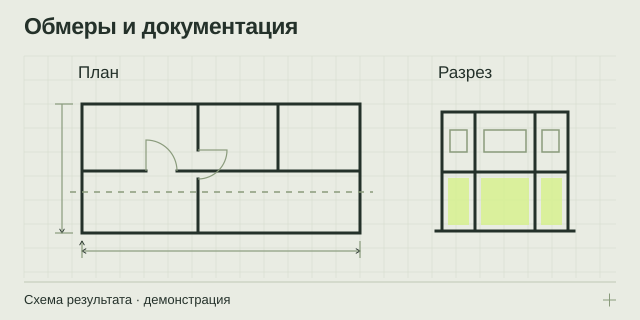

НАПРАВЛЕНИЕ 02 / ПРОЕКТНЫМ КОМАНДАМ И ВЛАДЕЛЬЦАМ ОБЪЕКТОВ
Обмеры зданий и обмерная документация
Получите планы, фасады и разрезы по фактическому состоянию объекта, чтобы у проектной команды была согласованная основа для работы.
Обмерные чертежи + экспликации по заданию
PDF / DXF / согласованный нативный формат

Из задачи — в проверяемый результат
Обмерная документация нужна, когда фактическая планировка отличается от архива, исходные чертежи отсутствуют или перед проектированием необходимо уточнить размеры. Основой могут служить новые измерения или предоставленные заказчиком данные, если их качество и полнота подходят для задачи. Сначала согласуется назначение документации: именно оно определяет, какие виды, размеры и пояснения должны войти в результат.
Когда стоит начинать с обмеров
Типичные ситуации — подготовка к ремонту и реконструкции, разработка интерьера, восстановление исходной геометрии здания, уточнение конфигурации фасада или размещения видимых конструкций. Заказчику нужен не просто файл с линиями, а понятный комплект, который можно передать следующему специалисту.
Для помещений важно заранее определить границы: только строительная геометрия или также видимое оборудование, проёмы, отметки и отдельные инженерные элементы. Неоговорённые элементы нельзя считать автоматически включёнными.
Как формируется комплект
- Уточняем назначение. Фиксируются задачи проектировщика, необходимые виды и условные обозначения.
- Проверяем исходные данные. Оцениваются имеющиеся планы, облака точек и доступ к объекту.
- Получаем геометрию. Измерения или обработка согласованных данных выполняются в пределах задания.
- Выпускаем чертежи. На планы, фасады и разрезы наносятся согласованные размеры и отметки.
- Передаём результат. Проверяются комплектность, форматы и соответствие согласованному составу.
Состав результата
- Поэтажные планы с нужными заказчику размерными цепочками и обозначениями.
- Фасады и разрезы — для выбранных направлений и сечений.
- Экспликации и ведомости в согласованном объёме.
- Пояснения об исходных данных, неполном доступе и ограничениях результата.
PDF удобен для просмотра и согласования; DXF и другие согласованные форматы — для последующей работы. Нативная выдача, включая DWG, обсуждается с учётом доступного программного обеспечения и требований принимающей команды.
Какие вводные ускорят обсуждение
Передайте перечень помещений или этажей, ориентировочную площадь, имеющиеся планы и цель будущего использования. Укажите желаемые масштабы, форматы, систему координат и требования к обозначениям, если они уже определены проектировщиком.
Полезно привести пример нужного листа или перечислить обязательные размеры. Для объекта с ограниченным доступом отметьте закрытые помещения, оборудование у стен и допустимое время посещения. Это помогает заранее увидеть возможные пробелы и согласовать способ их отражения.
Как рассчитывается объём работ
На расчёт влияют площадь и конфигурация объекта, количество этажей, насыщенность геометрией, перечень видов и степень детализации. Значение имеют состояние исходных данных, необходимость новой съёмки, оформление ведомостей и требования к редактируемым файлам.
До начала работ полезно закрепить список листов, правила отражения недоступных участков и порядок согласования уточнений. Так можно сравнивать предложения по одинаковому составу результата и принимать работу по понятным критериям.
Ответы перед заказом
Можно использовать старое облако точек?
Сначала нужно оценить его актуальность, качество, систему координат и полноту. Если состояние объекта изменилось или часть зон отсутствует, могут потребоваться дополнительные данные.
Будут ли на плане инженерные сети?
Только в согласованном объёме и там, где есть достаточные исходные данные. Скрытые трассы нельзя достоверно восстановить по одной лишь геометрии доступных поверхностей.
Как проверить, что комплект готов?
Критерии приёмки лучше согласовать заранее: перечень листов и видов, обязательные размеры, форматы, обозначения ограничений и комплектность исходных данных.
Подготовьте вводные без лишней переписки
Откройте памятку: она помогает описать объект, собрать исходные данные и выбрать нужный результат.
Что подготовить для расчёта ↗ОТ ЗАДАЧИ К СОСТАВУ РАБОТ
Обсудим ваш объект
Подготовьте город, тип и примерную площадь объекта, цель работ и имеющиеся документы. В брифе можно собрать вводные и открыть письмо экспертному партнёру.
Экспертный партнёр — АНО «МСК-Эксперт»: +7 495 648-50-91 · официальный сайт и форма обращения ↗. При нажатии на почтовую ссылку откроется ваша программа: письмо отправляете вы.